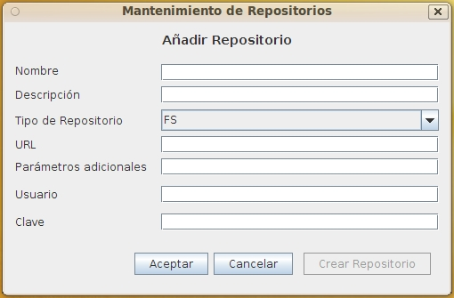

Mantenimiento Repositorios
Al seleccionar en el formulario de Lista Repositorios las opciones de Alta, Baja, Modificación o Copia de Repositorios aparecerá este formulario con diversos campos activados o desactivados.
Este formulario contiene la información:
- Nombre identificativo: Identificador del Repositorio cuyo valor no puede repetirse ni cambiar una vez asignado. Puede tener una longitud máxima de 32 caracteres. (Ej. "FS_Servidor1")
- Descripción del Repositorio: Descripción que permita interpretar el repositorio. Puede tener una longitud máxima de 128 caracteres. (Ej.: "Sistema de Archivos público 2 Teras en Servidor1")
- Tipo de repositorio: Indica el tipo de repositorio. Es posible implementar nuevos tipos si se necesita. Actualmente los existentes son:
- FS: FileSystem. almacenamiento en una carpeta de sistema accesible para los clientes Web o Swing.
- BBDD: Base de Datos. Almacenamiento en una tabla como atributo BLOB. Recomendable para archivos pequeños o tipos documentales con pocos ejemplares.
- FTP: Almacenamiento en un servidor ftp. Recomendable para tipos documentales con poco acceso.
- REFURL: Referencia a documentos/páginas existente en Internet/Intranet. Permite clasificar y catalogar documentos de interés sin tenerlos localmente almacenados.(Los documentos no se borran al borrar el registro)
- URL o referencia al repositorio:La URI o URL que referencia al repositorio. Para FS será un path accesible al ordenador u ordenadores que lo utilicen, en el caso de base de datos será una url JDBC; en el caso de ftp, un nombre o dirección ip.
- Parámetros adicionales del repositorio: En el caso de BBDD, el parámetro adicional es:"driver;nombre_tabla". El resto no requieren parámetros.
- Usuario de conexión al repositorio: Usuario necesario para conectarse al servidor remoto, no en FS.
- Password de conexión al repositorio: clave de acceso necesaria para conectarse al servidor remoto, no en FS.
- Indicador de si el repositorio está encriptado: Si esta opción está marcada, los documentos se encriptan al almacenarse y se desencriptan al recuperar. Esto asegura que aunque alguien tenga acceso a los documentos, solo sean accesibles a traves de OPD. Hay que tener en cuenta esto introduce una pequeña sobrecarga y que no se utiliza un sistema de encriptación muy sofisticado, por lo que si hay documentación muy confidencial debe evaluarse el uso de medidas adicionales.

Ver: Lista Repositorios
Índice Ayuda OpenProdoc